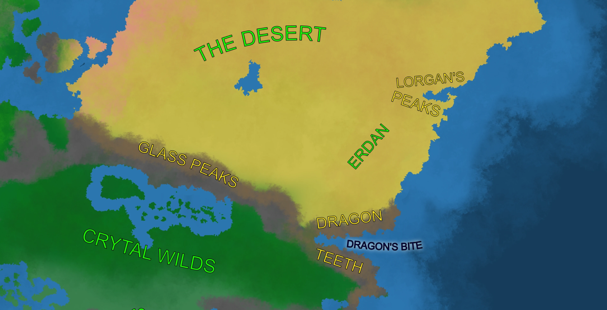
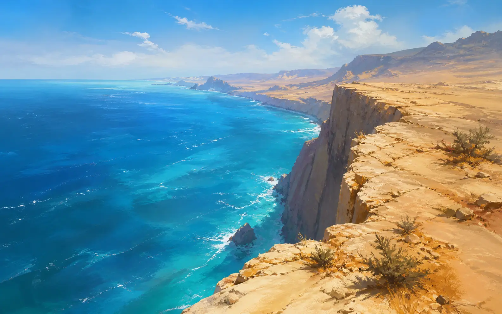

LShifting Sands of Erdan
Sands of Erdan are unforgiving. In the ages past there has been a great civilization here, yet after the age of Stars it lies in ruin and the treasures are just starting to be unearthed. Many artifacts and divine gifts await for those brave and foolish enough to try to find them, but even more deadly traps and curses lie in the darkness of the of the Desert.
Despite bordering the Desert to the north and the west, Erdan still is considered a different region, as its the geography and ecology are different. It lies between the Dragon Teeth to the south and Lorgan’s Peaks to the north, having a coast to the east with the Ocean of Lightning.

Peoples
Erdan is home to different peoples, despite being a rather sparse region. It is culturally diverse with many small groups of people having their own customs and traditions. Most of them are peaceful, yet still few lead a war path, [name] are the most influential of them, currently hampering all the attempts to unearth the treasures of the past – nobody knows if they do that for their own gain or to protect their heritage.
Aside from that there is an honorary border guard protecting the land from incursion of the companies from the Desert as many times they have tried to take over the region for their own gain. They use ancient magics to protect their land from the technologically advanced invaders.
There are no major permanent settlements due to the local climate, but a few smaller ones can be found around the desert, where the environment allows for that. Generally people there are more welcome to trade.
Environment

Most of the region of Erdan consists of deserts: dunes, planes and mountains with occasional rivers and oasis. To the south, by the mountains a small, local jungle can be found, with some endemic species.
The seasons go from hot in the winter to deadly in the summer reaching more than 50 degrees Celsius. The weather is not forgiving with often appearing sunstorms or sandstorms.
As mentioned before the ecosystem allows for many strange creatures to appear and hunt here. Generally wondering through the desert is not recommended, as it is a hunting ground for many predators, some specializing in hunting United Races for survival
Politics
Erdan, despite being sparsely settled is still a region of a deep political turmoil. From the north and west many factions operating in the desert try to expand their influence and take over parts of the region, which the people from here oppose. From the south the Trade State of Jihhar under T-Galir expands its influence with the Jihhar Standard Company.
The internal conflicts are not to be forgotten. Many people want to expand their influence. The three main factions are: Ones who want to open up for the outsiders letting them use this land and help Erdan evolve, isolationists who want to keep their secrets and traditions theirs and remnants of the Imperial Army still roaming and swearing allegiance to their long dead God-King.
Magics
Erdan is one of the few places on the continent where the natural magics have yet to wain. Many come here seeking ascendance and arcane treasures. Locals practice specific kinds of magics that are not known anywhere else.
Magics here seem to be temperamental and deadly to those who do not know how to wield them, so one needs to exercise caution when using any arcane skill, as not to curse themselves in the process.
Undead of the old Empire still roam the land, serving their long gone masters, mindlessly killing those who stand in their way, more as a calamity than any malicious acts.
Many nature spirits still find refuge here, in the parts and lands long forgotten, either thriving in solitude or waning, destined to be forgotten on the pages of history or often completely erased at all.
History
Erdan has been a prosperous Artifice state in the past, but through many calamities and people it has fallen, becoming a desert and ruin. The most important one was the rule of Daazur the Bloody who is the last emperor of the region, whose rule has brought the ruin to his estate and people.
Some rumors say that the rulers of the past still live there, driven mad by the choices they made in the past. But those are just rumors.